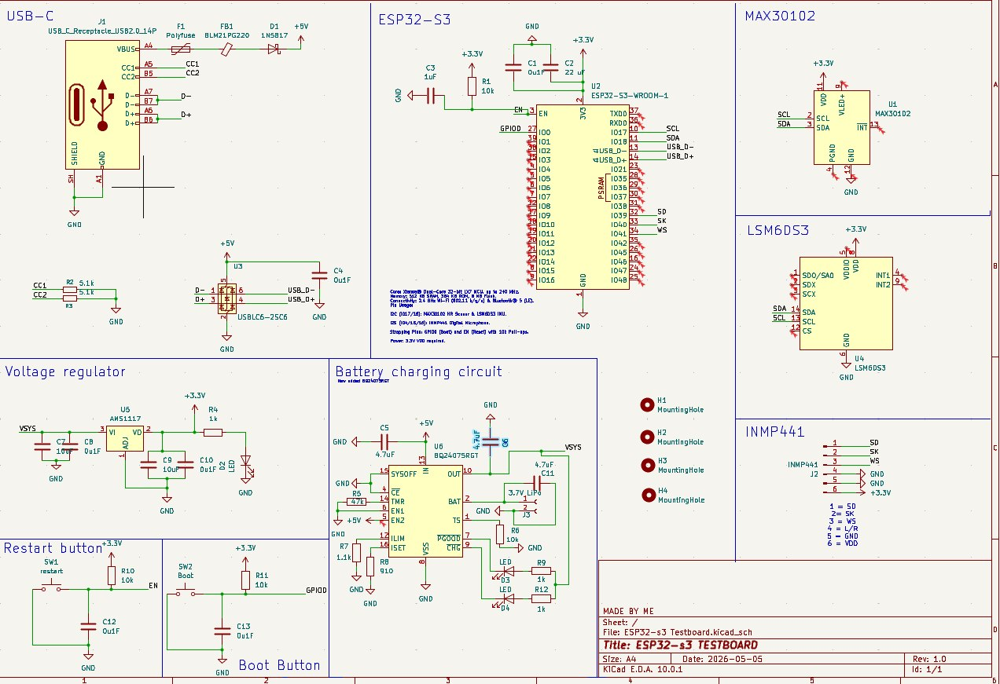
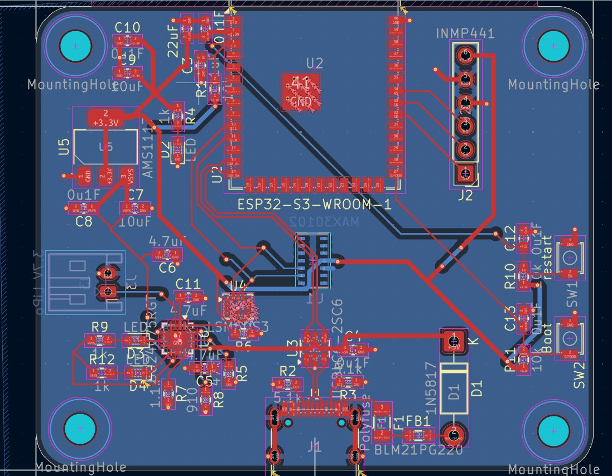

Ikimono
Emotional Intelligence Wearable for Children
Project Overview
Ikimono is a wearable watch designed for primary school children to help them detect and manage their emotions[cite: 10, 18]. Using integrated physiological sensors, the device reflects the user's emotional state through an interactable creature on the screen, complementing mindfulness techniques taught in schools[cite: 12, 19].
Project Concept

Conceptual poster detailing the "How It Works" workflow and design considerations.
System Demonstration
The showcase slides used giving details on the project
My Contributions
01. IoT Implementation & Firmware
Responsible for the core IoT architecture, integrating multi-modal sensors with the ESP32-S3 and developing the firmware for real-time data processing.
View IoT Source Code on GitHub ↗02. Electronics Schematic Design
Engineered the testboard schematic featuring a power management system with USB-C input, a BQ24075 battery charging circuit, and an AMS1117 voltage regulator.

The design integrates a MAX30102 Heart Rate sensor, LSM6DS3 IMU, and an INMP441 Microphone for comprehensive bio-sensing.
03. PCB Design & Optimization
Translated the schematic into a compact PCB layout optimized for a wearable form factor. Focused on signal integrity for the ESP32-S3 module and strategic placement of mounting holes for the watch casing.

Project Status: In Development
This project has transitioned into a second phase of development with an external partner. While the core "Ikimono" V1 prototype focused on wearable bio-sensing, the partnership is facilitating a major pivot to expand the system's impact.
Team & Credits

Beyond the hardware, I provided holistic support in system architecture and technical documentation to ensure project cohesion.
Development Team:
- Bryan Willson Chandna
- Lydia Tam
- Chaurasis Parth
- Sng Ming Xiang